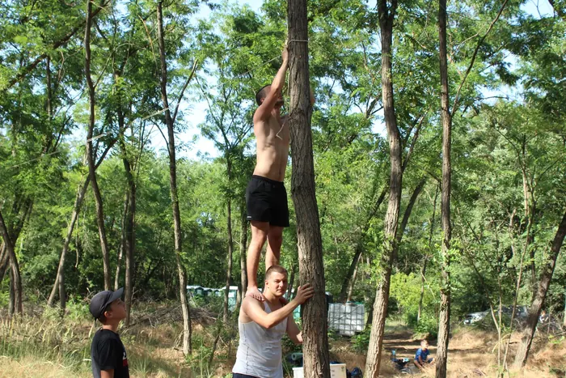
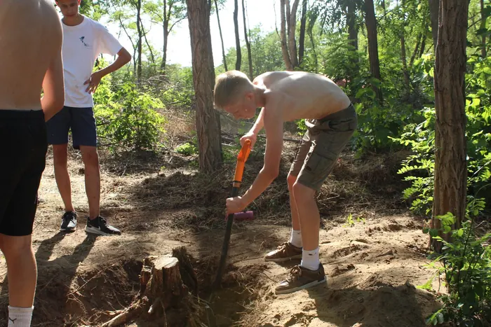
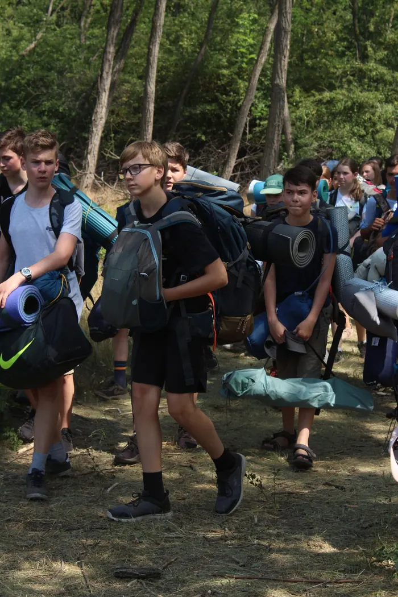
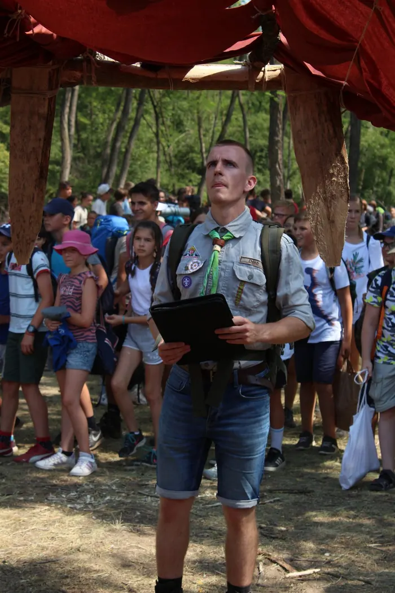
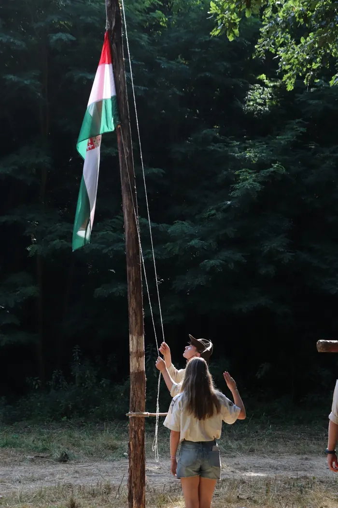
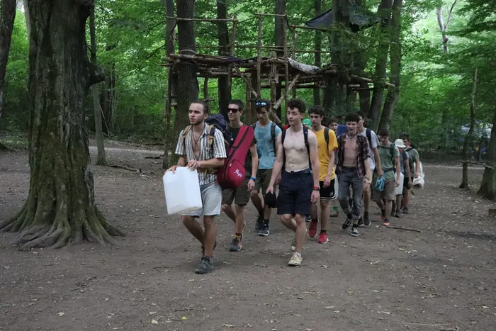
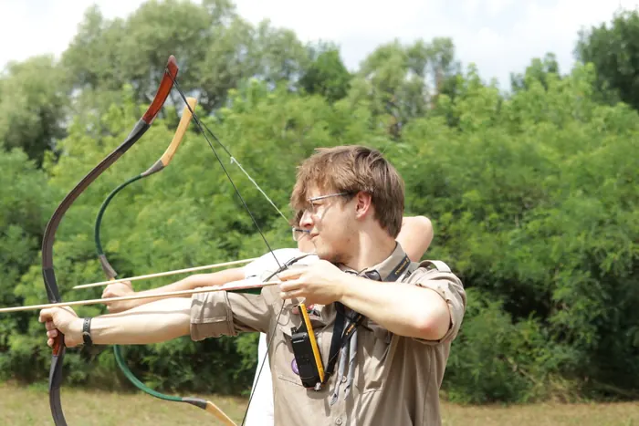
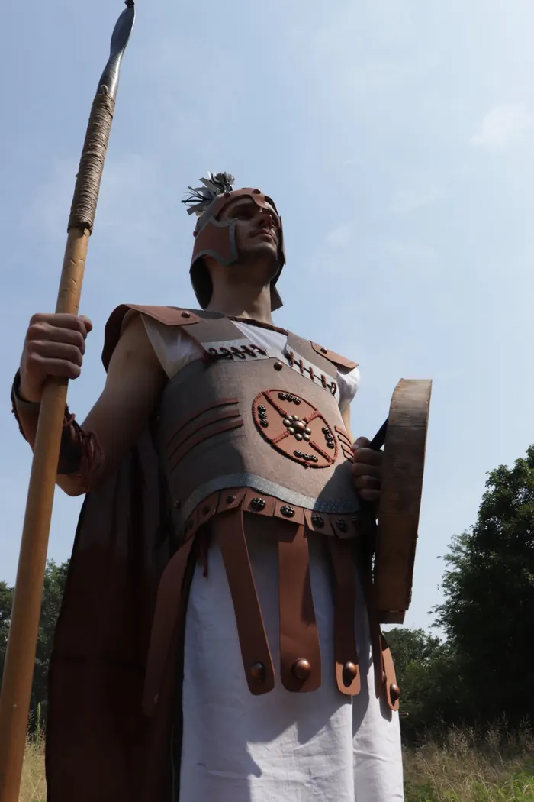
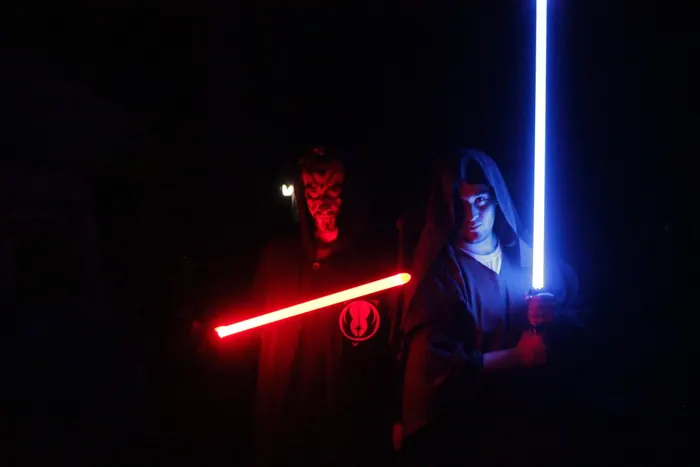

5 napos tábor azoknak, akik most fejezték be a 4. osztályt.
Időpont
Hamarosan frissítjük!
Helyszín
Hamarosan frissítjük!
Főszervezők
Főszervező Neve, foszervezo-kiscserkesz1@example.com
Főszervező Neve, foszervezo-kiscserkesz2@example.com
Mindenki másnak. Az 5. osztályt most végzők 6 napra érkeznek, mindenki más a teljes, 10 napos táborban vesz részt.
Időpont
Hamarosan frissítjük!
Helyszín
Hamarosan frissítjük!
Főszervezők
Főszervező Neve, foszervezo-nagytabor1@example.com
Főszervező Neve, foszervezo-nagytabor2@example.com


Táboraink nomádtáborok: sátorban alszunk, latrinát használunk, és egész nap a természetben vagyunk. Bár ez elsőre szokatlan lehet a gyerekeknek, több éves tapasztalatunk, hogy jót tesz nekik: kimozdulnak a komfortzónájukból, és közel kerülnek a természethez.
A tábor során a gyerekek nem csak a sátrukat állítják fel az őrsükkel. Az előtáborban a szükséges infrastruktúra nagy részét a vezetők építik meg számukra, a tábor első két napját viszont arra szánjuk, hogy a gyerekek maguk alakíthassák ki a környezetüket. Építenek többek között asztalt, tűzrakót és csajkatartót, ponyvát kötnek fel, sátorárkot ásnak, és még sok apróságot készítenek, amelyek megkönnyítik a tábori hétköznapokat.


A nomád körülmények miatt a megszokott táborokétól eltérő felszerelésre is szükség van.



A táborban a gyerekek rendkívül sokszínű programokon vehetnek részt. Minden reggel és este közös zászlófel- és levonással indítjuk, illetve zárjuk a napot. A tábor során többször maguknak főznek, közösen részt veszünk szentmisén vagy istentiszteleten, túrázunk, hagyományőrző programokon veszünk részt, esténként pedig tábortűz mellett nézzük meg a vezetők szórakoztató előadását, közösen énekelünk és játszunk.


A gyerekek minden táborban egy új történetbe csöppennek bele. Minden táborunk egy általánosan ismert történetet dolgoz fel, például a Macskafogót, az Aladdint vagy a Star Warst. A tábor során a vezetők színházszerű jelenetekben vezetik végig a gyerekeket a történéseken, és a világra jellemző nyelvezetet használjuk.